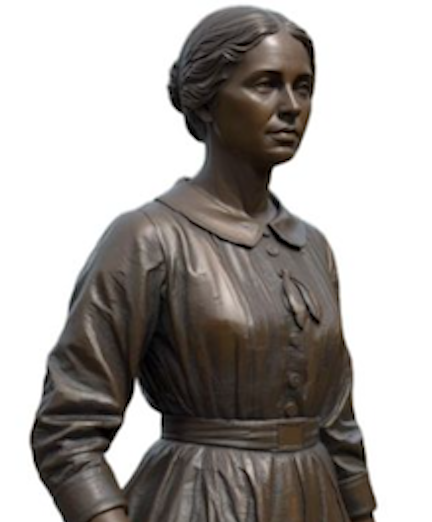

Grace Sherwood
Grace Sherwood was the first witch in Virginia Beach. She was thought to be a witch after people did a water test, where they threw her into a lake, and she floated instead of sinking, so they charged her with the crime of witchcraft, but later they allowed her to be free after 7 years due to the softening of their hearts.